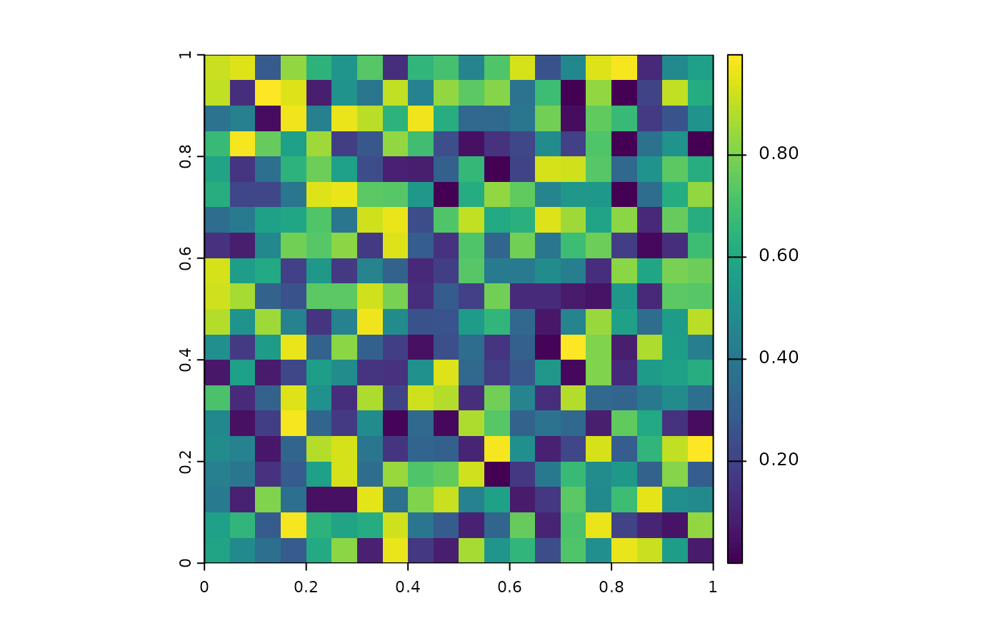
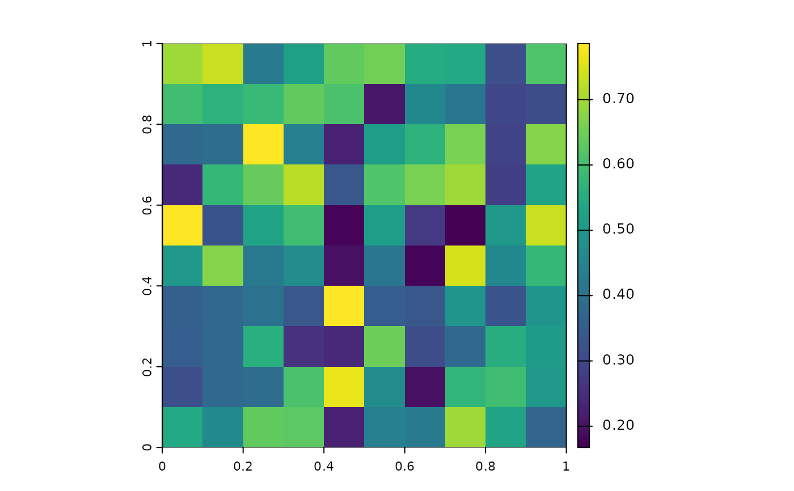

Calculate spatial standard deviation at 0.1 degrees resolution
SpatCor.RdAggregates a fine-resolution raster to a coarser resolution (0.1 degrees), computing the standard deviation for each block based on a variogram model, accounting for spatial correlation.
Value
A SpatRaster object at 0.1-degree resolution with values representing the standard deviation
of the input data aggregated over blocks, adjusted for spatial correlation.
Examples
# Aggregate a synthetic raster to 0.1-degree resolution:
library(terra)
#> terra 1.8.70
library(gstat)
set.seed(42)
r <- rast(ncol = 20, nrow = 20, xmin = 0, xmax = 1, ymin = 0, ymax = 1, vals = runif(400))
plot(r)

vgm_model <- gstat::vgm(psill = 1, model = "Sph", range = 100, nugget = 0.1)
result <- SpatCor(vgm_model, r)
plot(result)
